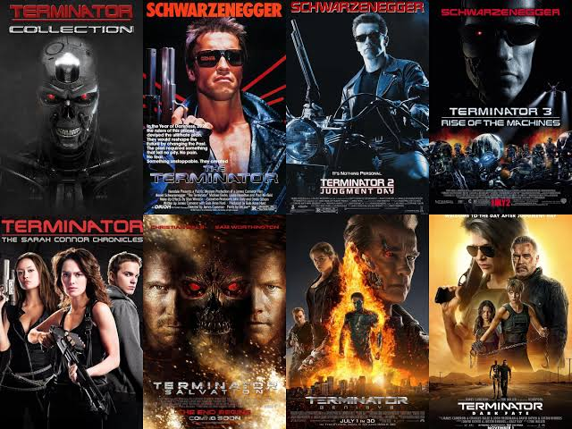

Exterminador do Futuro



Exterminador do Futuro
A trilogia original de O Exterminador do Futuro acompanha a violenta guerra entre a humanidade e uma inteligência artificial global chamada Skynet, que utiliza viagens no tempo para tentar apagar a resistência humana antes que ela comece.
O Exterminador do Futuro - Destino Sombrio | Trailer Dublado
O filme O Exterminador do Futuro: Destino Sombrio (2019) é uma sequência direta de O Julgamento Final (1991), desconsiderando os eventos dos filmes intermediários da franquia.